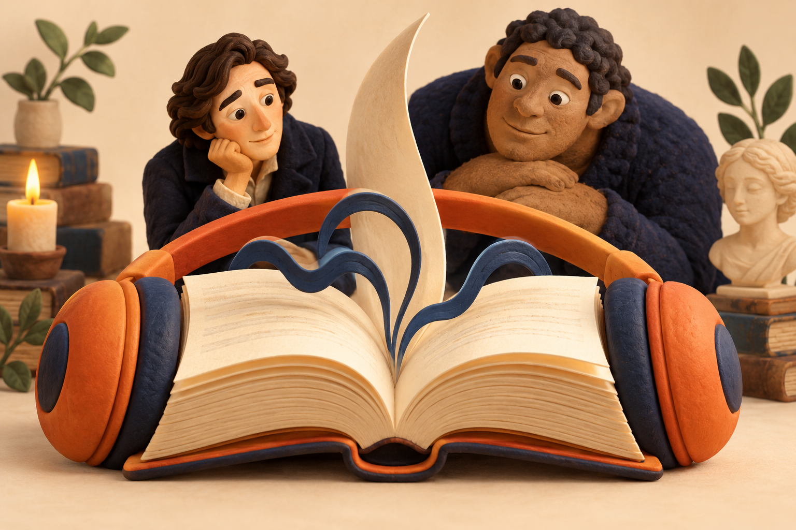

弗兰肯斯坦，
究竟是谁的名字？
创造成功以后，责任才开始，还是已经结束？从创造者的逃开与被造者的自述，听懂这部小说提出的问题。

依据玛丽·雪莱1818年三卷版的原创概述与解读，不是原著全文朗读或现代中文译本节选。会讲到重要情节和结局。
直接收听完整解读
复用2026年10月2日已制作的完整音频：声音由AI合成，中文稿由Ryan Zhu与AI辅助编写。Mac端调用归档Build83模型生成，非iPhone录音或真机速度测试。音轨389.88秒，没有本轮重新生成。
收听进度只保存在当前浏览器，不上传；换设备不会同步。
先分清两个细节
弗兰肯斯坦是创造者维克多的姓，被造者没有正式名字。结尾写了被造者宣布结束生命的打算，并写他离开、消失；叙述者没有见证那个打算完成。人物的计划和已经发生的情节，需要分开。
本稿的观点属于一种解读，不是唯一结论。1818年版每卷重新编号，不能直接套用1831年修订版的关系与章节。
展开完整中文朗读稿
如果听到这个词，你脑海里出现的是一个高大的怪物，那么，今天这期节目可以先纠正一个小小的误会。玛丽·雪莱在一八一八年出版的小说里，弗兰肯斯坦是创造者的姓。他叫维克多·弗兰肯斯坦。那个被他创造出来的生命，没有得到一个正式的名字。
我们今天依据一八一八年的三卷版，讲一遍这个故事，再讨论它提出的一个问题：创造成功以后，责任才开始，还是已经结束？接下来会讲到重要情节和结局。这是一篇原创的书籍解读，不是原著全文朗读，也不是某个中文译本的节选。
故事的第一位讲述者，其实不是维克多。他是一个叫沃尔顿的探险者，正在向北方航行。他把自己的见闻写成信，寄给姐姐。他渴望发现未知的世界，也希望取得令人记住的成就。
在冰海上，他遇到了一个几乎被折磨垮的人。这个人就是维克多。于是，一位想要突破边界的探险者，开始听另一位曾经突破边界的人，讲述自己的经历。
维克多从小对知识怀有强烈的兴趣。后来，他去因戈尔施塔特学习。他的问题越来越大胆：生命究竟怎样产生？能不能让没有生命的东西活过来？他把休息、健康和亲近的人都放在了一边，长期埋头工作。
然后，那个关键的夜晚来了。小说把它放在一个阴沉的十一月夜里。雨打着窗户，蜡烛快要燃尽。维克多看见，自己创造的生命睁开了眼睛，开始呼吸。
这本来应该是他最想要的时刻。他追求了那么久，结果终于出现了。但是，结果出现以后，他的梦想突然失去了原来的光彩。恐惧和厌恶占据了他。他没有留下来照顾这个刚刚醒来的生命，而是逃开了。
这里值得停一下。实验成功，是故事的起点。从那个夜晚开始，真正困难的问题才出现：这个生命怎样认识世界？谁来教他说话？谁来帮助他理解别人？维克多想完成创造，却没有准备好与创造出来的生命相处。
后来，小说让我们听见了被造者自己的讲述。他最初并不懂得自己的处境，也不懂得语言。他感受冷、热、饥饿和光。他尝试接近人，却一次次遇到恐惧和驱赶。
他躲到一户人家附近，悄悄观察他们。他看见一家人彼此照顾，也逐渐理解了语言。他还在夜里帮他们收集柴火。从他的讲述看，他想要的并不只是生存。他希望进入一种关系，成为可以被接纳的人。
后来，他读到了几本书，其中有《失乐园》。他把书里的故事与自己的处境联系起来。一方面，他像一个刚被创造出来的生命；另一方面，他又觉得自己更像一个被排除在幸福之外的存在。这是人物理解自己的方式，不等于小说替他作出了最终判断。
他决定向那户人家表明身份，却选择先去见失明的老人。因为老人看不见他的外表，他希望自己的话能够先被听见。老人确实愿意听他说，也表达了帮助他的意愿。可是，当家中的年轻人回来，看见他时，局面迅速变了。他没有得到自己期待的接纳。
这一段令人难受的地方，在于我们已经知道，他曾经怎样学习语言，怎样观察善意，怎样想象被接纳的可能。可是在别人眼中，他的外表先一步决定了他的身份。
但是，理解他的痛苦，并不意味着可以把后来的伤害说成正当。他杀害了维克多的弟弟，还把罪证放到无辜的朱斯蒂娜身上，导致她被定罪处死。小说并没有让悲惨的身世取消这些行为的后果。
维克多和被造者再次相见时，被造者提出一个要求：为他创造一个同类的伴侣。他认为，只要不再孤独，自己就能远离人类，和伴侣一起生活。维克多最终答应了，并开始动手。
可是，在工作过程中，维克多越来越害怕。他担心新的生命不会服从安排，担心自己不能控制后果。他毁掉了还未完成的第二个生命。被造者看见这一切，报复的冲动进一步加剧。他威胁维克多，会在他的婚礼之夜出现。
维克多以为，这个威胁意味着自己会被杀。他把注意力放在防备自己的死亡上，却没有理解真正的危险。婚礼之夜，被杀的是伊丽莎白。此前，他的好友克莱瓦尔也已经遇害。
接下来，创造者与被造者之间的关系，变成了追逐与报复。维克多一路追赶，直到冰海，直到遇见沃尔顿。他最后死在了沃尔顿的船上。被造者来到他的遗体旁，表达了痛苦和悔恨，也说出自己准备结束生命的打算。
这里还有一个经常被讲得太确定的细节。小说最后写的，是他离开船舱，踏上浮冰，消失在黑暗和远方。读者听到了他的打算，却没有看见那个打算最终完成。不能把他声称要做的事，直接讲成叙述者已经见证的事实。
听完整个故事，我们可以提出三个问题。
第一个问题是，创造者的责任是什么？我的理解是，维克多的失败，不仅在于他做出了什么，也在于他在成功以后逃避了什么。把一个生命带到世界上，与持续面对它带来的关系和后果，是两件相连的事。
第二个问题是，被拒绝可以解释伤害吗？这个故事让我们看见，被排斥怎样积累成痛苦。但它也让我们看见，无辜的人怎样承受了报复。解释一种行为的来由，并不等于替行为开脱。
第三个问题是，我们听见了谁的声音？沃尔顿写信，维克多讲自己的故事，被造者又在维克多的故事里讲述自己。每个人都带着自己的愿望、恐惧和辩解。读者得到的不是一个没有立场的实验记录，而是几层彼此嵌套的叙述。
所以，我愿意把这本书理解成一部关于创造与关系的小说。它没有只问，能不能把事情做出来。它还追问，做出来以后，谁来面对它？谁的痛苦能够被听见？谁又应该为自己的选择承担后果？
下一次听到弗兰肯斯坦这个名字，也许你会先想到那个逃开的人，再想到那个没有名字、一直要求别人听自己说话的生命。这个变化，就足以让这本老小说，重新变成一个值得听的故事。
展开来源与章节说明
《弗兰肯斯坦》书籍解读：来源与范围 原著：Mary Wollstonecraft Shelley，Frankenstein; Or, The Modern Prometheus，1818年三卷版。 版本资料：https://www.gutenberg.org/ebooks/41445 原文阅读：https://www.gutenberg.org/cache/epub/41445/pg41445-images.html 核查日期：2026-10-02。网站说明此文本基于1818年版的影印重印本；不与1831年修订版混用章节编号。 主要情节定位（1818年版，各卷重新编号） - 开头四封信：沃尔顿向姐姐叙述航行、遇见维克多，故事以书信包裹维克多的讲述。 - 第一卷第三、四章：知识追求、长期实验；第四章的十一月夜，生命苏醒，创造者恐惧逃开。 - 第一卷第七章与第二卷第一章：朱斯蒂娜的审判、处死及维克多的负罪感。 - 第二卷第二至八章：被造者讲述自己的经历；第四章学习语言、为农家收集柴火；第七章阅读《失乐园》、接近失明老人及随后被拒绝；第八章杀害威廉、放置罪证。 - 第二卷第九章：要求同类伴侣、对双方离开人类社会的承诺，以及维克多答应请求。 - 第三卷第三章：维克多毁去未完成的第二个生命，婚礼之夜的威胁。 - 第三卷第四至六章：克莱瓦尔之死、婚礼安排及伊丽莎白被杀。 - 第三卷第七章：追逐、维克多死亡、被造者的最后自述及消失在黑暗和远方。 表达边界 本节目是依据英语原著写成的原创中文概述和解读，不复制现代中文译本。没有把影视改编的造型、台词或实验步骤补进原著，没有编造作者访谈或唯一创作意图。创造责任、解释与开脱、叙述视角等讨论明确属于本稿解读。结尾区分人物结束生命的计划和叙述实际呈现的离开；没有声称叙述者见证其自杀。 本节目含重要情节和结局。没有提供原著全文或第三方插图。本页只保留原著链接与章节说明，不把Project Gutenberg数据库和编辑者的整理成果打包再分发。 由「自听」MyListen开发者Ryan Zhu提供，AI辅助写作与制作。音频使用Build83归档模型和对应原生代码，在独立Mac mini工具生成；不是iPhone录音或性能测试。
展开可复制的中文请求
请写一篇适合连续收听的中文书籍解读稿，主题是玛丽·雪莱《弗兰肯斯坦》，依据1818年三卷版。目标读者是没有读过原著、希望先听懂故事与关键问题的成年人。约2200至2800个中文字，自然口语，段落衔接清楚。 使用这些原始资料： https://www.gutenberg.org/ebooks/41445 https://www.gutenberg.org/cache/epub/41445/pg41445-images.html 如果不能访问资料，先明确说明，不假称读过。 开头说明会讲重要情节和结局；说明弗兰肯斯坦是创造者的姓，被造者没有正式名字。按沃尔顿书信、维克多创造与逃避、被造者的学习和被拒绝、伴侣请求、毁去第二个生命、报复与追逐、最后离开的路径讲故事。依据1818年原版，不混用1831年版角色关系或章节编号，不把影视画面和实验细节当原著事实。 区分三类表达：原著明确出现的情节；人物对自己经历的说法；本稿的解读。解读可以讨论创造以后承担责任、理解痛苦不等于替伤害开脱、嵌套叙述的视角，但必须用“我愿意这样理解”等表达，不冒充作者访谈或唯一正确结论。被造者在结尾宣布计划结束生命，叙述实际只写他离开并消失，不能把计划当已见证的结果。不要整段复制现代中文译本。 分开输出：1.纯朗读正文，段落之间空一行，不带网址、脚注、列表、产品广告或章节核查编号；2.来源与章节核查表；3.事实仍不确定的地方。不在正文重复读参考资料。不捏造引语、评论、销量或历史背景。
阅读原始资料
来源核查于2026年10月2日。没有将电影画面或人物造型当作原著事实；配图为AI概念插图，不是具体版本原版插画。